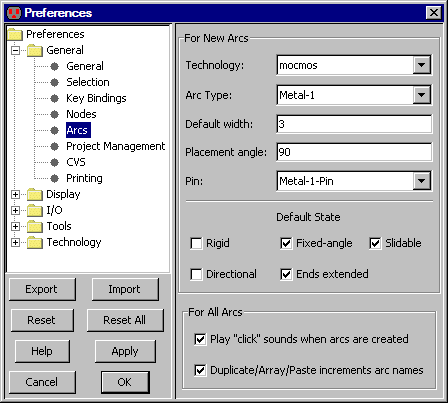

The Arcs Preferences (in menu File / Preferences..., "General" section,
"Arcs" tab) lets you control the arc creation process.
It does not affect existing arcs, only those that are subsequently created.
The top part of the dialog allows you to set defaults for specific types of arcs
.
You select the "Technology" and "Arc Type", and then set defaults for it (such as the "Default width").
The "Placement angle" is the granularity for running this type of arc (in degrees).
A value of 90 lets arcs run at 0, 90, 180, or 270 degrees: manhattan geometry.
A value of 45 lets it run at any of 8 angles (useful for schematics).
A value of 0 lets it run at any angle (used in artwork).
The "Pin" is the node that gets used for connecting two of these arcs.
It is typically a "Pin" node (see Section 7-1-1).
If changed to a node with geometry (such as a contact node) then these contacts will be placed
at the bends of this arc.
The checkboxes in the "Default State" section have these meanings:
- Rigid - whether the arc is rigid in length and relationship to its nodes
(see Section 5-2-1).
- Fixed-angle - whether the arc stays at the same angle when one end moves
(see Section 5-2-1).
- Slidable - whether the arc slides around in its node's port
(see Section 5-2-2).
- Directional - whether the arc has an arrow drawn on it
(see Section 5-4-1).
- Ends extended - whether the arc extends past its endpoint by half its width
(see Section 5-4-3).
|  |
The bottom portion of the dialog has controls for all arcs.
- "Play 'click' sounds when arcs are created" - plays a sound to confirm arc creation.
The sound is a single click for one arc, a double-click for two arcs,
and a triple-click for three or more arcs.
- "Duplicate/Array/Paste increments arc names" -
sets whether the name on an arc should be kept unique by auto-incrementing
after this arc has been duplicated, arrayed, or pasted.